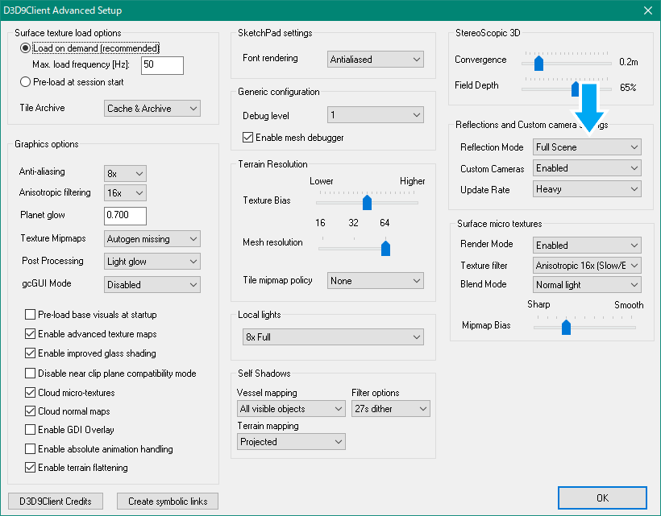

AMSOのダウンロード+インストール (2016)
Orbiter2016にAMSOをインストールする手順について解説します。
ダウンロード
高解像度テクスチャのダウンロード
AMSO for Orbiter 2016では月面の高解像度テクスチャが必須です。
高解像度テクスチャの導入は以下のページを参照してください。
インストール
ダウンロードしたファイルを解凍して、中身をOrbiterのインストールフォルダに上書き。
旧バージョンからアップデートする場合は、あらかじめ関連するファイルをすべて削除してください。
初期設定
Parameters
LaunchpadのParametersタブを開いて、以下の設定を確認・変更してください。※
※オートパイロットの挙動に影響します。
以下の設定は必ず有効にしてください。（チェックを入れる）
- Complex flight model
- Limited fuel
以下の設定は無効にしてください。（チェックを外す）
- Gravity-gradient torque
- Damage and failure simulation※
※必ずしも無効にする必要はありません。詳しい解説は下記を参照
設定項目の意味については、以下のページを参照してください。
Realism（リアリズム）とPerturbations（摂動）の設定
Visual effects
LaunchpadのVisual effectsタブを開いて、以下の設定を確認・変更してください。
- Surface elevationのドロップダウンリストからlinear interpolationを選択する。
- Max. resolution levelを19にする。
- Particle streamsにチェックを入れる。
- Ambient light levelを15から30までの値に設定する。※
※暗く感じる場合は値を大きくしてください。
必要なMODの一覧
以下のMODはすべて_ADDONSフォルダに同梱されています。
D3D9Clientは必須、LTMFDとIMFDは月往復ミッションの再現で必要になります。
インストール手順については以下のページを参照してください。
※D3D9Client R3.13以降のバージョンが必要
D3D9Clientの設定
LaunchpadでVideoタブを開く。
AdvancedをクリックしてAdvanced Setupダイアログを開く。
Experimental Lunar Terrain Interpolationにチェックを入れる。
（ダイアログボックスの左下）
Reflection ModeのドロップダウンリストからFull Sceneを選択。
（ダイアログボックスの右上）

IMFDの設定
時刻表示の設定は、かならずGETにしてください。
参照：IMFDのインストールと設定
LambertAP Mode
IMFDのオートパイロットの設定を変更すると、マニューバ実行中の姿勢制御を実際のアポロ宇宙船に近づけることができます。※
※この設定をしなくても、ミッションの遂行にはほとんど影響しません
Program MenuからConfigurationを選択（MNU→MODの順番でクリック）。
Nxtを何度かクリックしてLambertAP Modeを選択。
+をクリックしてApolloP30に切り替える。
グラフィックMOD
サターンロケットの見た目が良くなるMODです。
インストールは、ファイルを解凍して中身をOrbiterのフォルダに上書きするだけ。
注意点
Damage and failure simulation
この設定が有効になっていると、低い確率でランダムに故障が発生します。
実際のミッションに忠実にプレイしたい場合は、無効にしておくことをおすすめします。
ただし、13号のミッションを史実通り進めたい場合は有効にしてください。
故障の種類によってはミッションを続行可能なこともあります。
JかKを押すことによってアラームを停止できます。
CamShake
CamShake（ゲーム内でカメラを振動させるMOD）を導入している場合は外してください。
音声の自動再生
11号ミッションでは、音声の自動再生のタイミングでタイムワープが解除されます。
手動で操作したい場合には、Ctrl+Kの同時押しで自動再生を停止できます。※
※PDIなどの一部の音声は無効にできません。
資料
NASAの公式サイトにてApollo by the Numbersのウェブ版が無料公開されています。
これを読めば、各ミッションにおけるエンジンの噴射時間などのスケジュールを確認できます。
SP-4029 Apollo by the Numbers: A Statistical Reference
PDF版には画像も収録されています。
Apollo by the Numbers - SP-4029.pdf